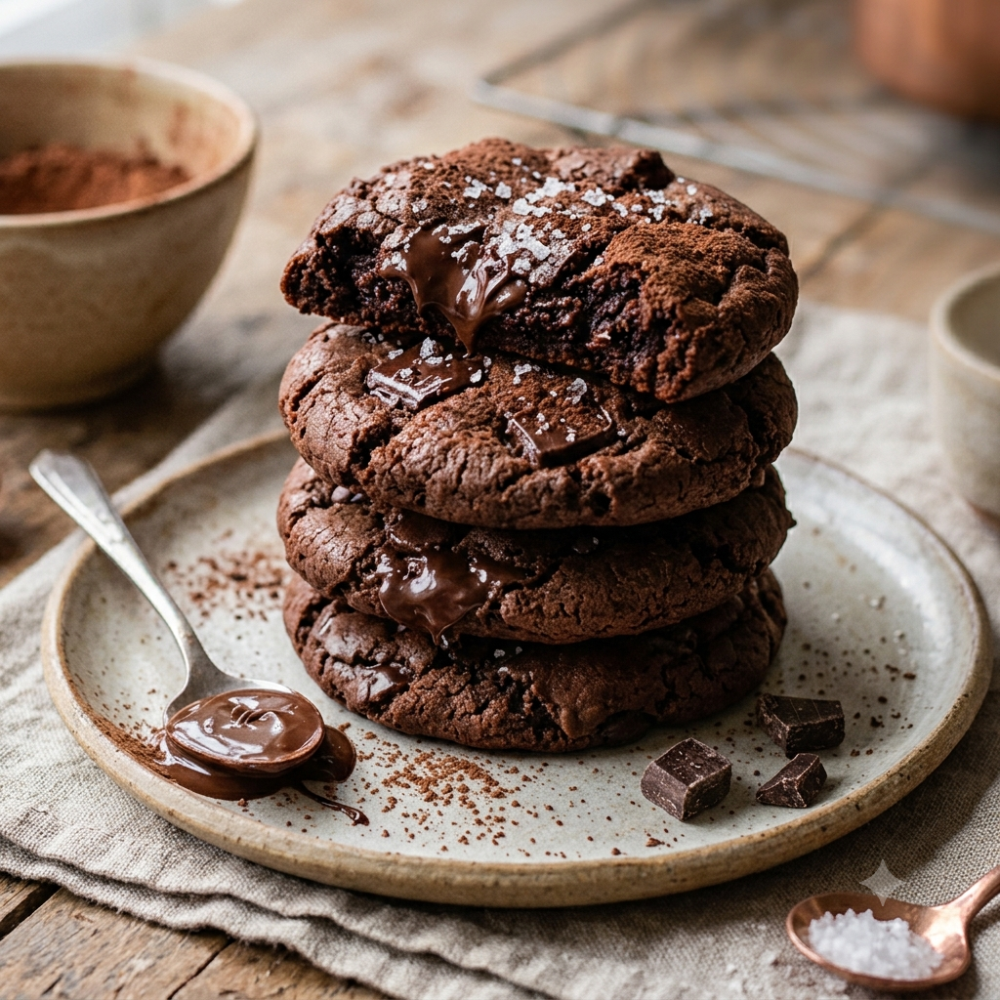

RECETA #017
Galleta Doble Chocolate

Ingredientes
- 230 g de mantequilla a temperatura ambiente
- 140 g de azúcar refinada
- 140 g de azúcar mascabado
- 2 piezas de huevo
- 80 g de nuez (opcional)
- 3 g de bicarbonato de sodio
- 70 g de cocoa
- 410 g de harina
- 30 g de maicena
- 40 g de chispas de chocolate
- Para la ganache: 250 g de chocolate semiamargo
- Para la ganache: 200 g de crema 30% grasa
- Para la ganache: 50 g de aceite vegetal
Procedimiento
Prepara una charola con papel Estrella o papel antiadherente.
Acrema la mantequilla y los azúcares por 3-4 minutos.
Agrega el huevo y la vainilla.
Mezcla todos los ingredientes restantes y agrégalos manualmente.
Forma bolitas de 80 g. Colócalas sobre la charola dejando espacio entre una y otra.
Congela por 30 minutos.
Hornea a 160°C por 20 minutos.